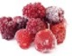

Apple
Nutritional value (1 medium):
75 calories, 3 g fibreDisease-fighting factor:
Apples contain antioxidants called flavonoids, which may help lower the chance of developing diabetes and asthma. Apples are also a natural mouth freshener and clean your teeth with each crunchy bite.Did you know?
An apple's flavour and aroma comes from fragrance cells in apple skin, so for maximum flavour, don't peel your apple. Plus, the vitamins lie just beneath the skin.Avocado
Nutritional value ( ½ avocado):
114 calories, 4.5 g fibre, source of vitamin E and folateDisease-fighting factor
Avocados contain healthy monounsaturated fats that can help lower cholesterol levels when eaten instead of harmful saturated fats. For a heart-healthy boost, replace butter with avocado on your favourite sandwich.Did you know?
Babies love avocados. Their soft, creamy texture makes them easy to eat, and their high fat content helps with normal infant growth and development.Banana
Nutritional value (1 medium):
105 calories, 3 g fibre, source of vitamin B6, potassium and folateDisease-fighting factor:
With 422 milligrams of potassium per banana, these sweet delights have more potassium than most fruit and may help lower blood pressure levels.Did you know?
People with rubber latex allergies may also be allergic to bananas since the two come from similar trees and share a common protein.Blackberry
Nutritional value (1/2 cup/125 mL):
31 calories, 4 g fibre, rich in antioxidantsDisease-fighting factor:
Blackberries get their deep purple colour from the powerful antioxidant anthocyanin, which may help reduce the risk of stroke and cancer. Studies show that blackberry extract may help stop the growth of lung cancer cells.Did you know?
The ancient Greeks called blackberries "gout-berries" and used them to treat gout-related symptoms.Blueberry
Nutritional value (1/2 cup/125 mL):
41 calories, 1.5 g fibre, rich in antioxidantsDisease-fighting factor:
Blueberries rank No. 1 in antioxidant activity when compared to 60 other fresh fruits and vegetables. Blueberries may help lower the risk of developing age-related diseases such as Parkinson's and Alzheimer's."Did you know?
Blueberries freeze very well. Here's how: Rinse, then let berries dry in a single layer on towels. Freeze in a single layer on rimmed baking sheets. Seal in freezer-safe containers for up to one year. Use them straight from the freezer in your morning cereal, blend them into a smoothie or mix into pancake or muffin batter. (You can also buy frozen blueberries year-round.) The serving size listed for each fruit in our glossary counts as one serving in Canada's Food Guide. The number of servings you need each day depends on your age and gender. For example, women between the ages of 19 and 50 need seven to eight servings of fruit and vegetables each day (three fruit and four vegetable servings would suffice). To determine the correct number of vegetable and fruit servings for you, visit the Health Canada website (www.hc-sc.gc.ca) at and search for "food guide."Cantaloupe
Nutritional value (1/2 cup/125 mL):
25 calories, less than 1 g fibre, source of vitamin A, folate and potassiumDisease-fighting factor:
Cantaloupe is high in the antioxidant beta-carotene, which may help reduce the risk of developing cataracts. Cantaloupe is a perfect diet food since it has about half the calories of most other fruits.Did you know?
Since bacteria can grow on the outside rind, it is important to wash cantaloupe before cutting into it.Cherry
Nutritional value (1/2 cup/125 mL)
46 calories, 1.5 g fibre, rich in antioxidantsDisease-fighting factor:
Sour cherries contain more of the potent antioxidant anthocyanin than any other fruit. Anthocyanin may help reduce inflammation and ease the pain of arthritis and gout.Did you know?
Sour cherries, commonly used in pie and jam, have more vitamin C than sweet cherries do, but much of it is lost when they are heated.Cranberry
Nutritional value (1/2 cup/125 mL):
25 calories, 2.5 g fibre, rich in antioxidantsDisease-fighting factor:
Cranberries are antibacterial and studies show that they can help treat and prevent urinary tract infections. Recent research has also linked cranberries to the prevention of kidney stones and ulcers.Did you know?
Unsweetened cranberry juice makes an excellent mouthwash – studies show it can help kill bacteria and fight cavities.Fig (dried)
Nutritional value (2 dried figs):
42 calories, 1.5 g fibre, source of potassium, calcium and ironDisease-fighting factor:
High in fibre, figs may help reduce the risk of heart disease.Did you know?
figs make an excellent substitute for fat (like butter or oil) in baked goods. Simply purée 1 cup (250 mL) of dried figs with 1/4 cup (50 mL) of water, then replace half of the fat called for in the recipe with an equal amount of the fig mixture.Goji berry
Nutritional value (1/2 cup/125 mL):
90 calories, 2.5 g fibre, source of vitamin A, rich in antioxidantsDisease-fighting factor:
Goji berries are a nutrient powerhouse, containing six vitamins, 21 minerals and a slew of antioxidants. They have been linked to the prevention of diabetes and cancer, but more research is needed to understand their effects.Did you know?
Dried goji berries, which look like dried cranberries, can be found in most health food and bulk stores. Health Canada has warned people using the prescription drug Warfarin to avoid goji berries, because they can alter the drug’s effectiveness.Frozen fruit
If your favourite fresh fruit is only available for six weeks of the year, head to the frozen food aisle. Grocery store freezers house a variety of affordable frozen fruit, ranging from cubed mango to woodland blueberries to tropical fruit salad. Not only is frozen fruit convenient, but it's also equally nutritious if not more so than its fresh counterpart. Fresh fruit starts to lose nutrients as soon as it's picked. The time between harvest and consumption can be long enough for significant nutrient losses to occur. Frozen fruit, however, is picked and frozen immediately, retaining much of the nutrient value. Plus, since frozen fruit is already washed, peeled and cut, it's a breeze to use. It can be thawed at room temperature or defrosted in the microwave. Once defrosted, eat it as you would fresh fruit, or use it atop cereal, mixed in yogurt or blended into smoothies.Grape
Nutritional value (1/2 cup/ 125 mL):
53 calories, less than 1 g fibre, source of manganeseDisease-fighting factor:
Grapes contain resveratrol, an antioxidant that may help prevent heart disease by reducing blood pressure levels and lowering the risk of blood clots. Resveratrol may also help stop the spread of breast, stomach and colon cancer cells.Did you know?
You can freeze red and green grapes and use them as colourful ice cubes in your favourite drinks. They add a special touch to sparkling water or Champagne.
Grapefruit (pink)
Nutritional value (1/2 grapefruit):
52 calories, 2 g fibre, source of vitamin ADisease-fighting factor:
Pink grapefruit contains lycopene and flavonoids, which may help protect against some types of cancer. Grapefruit also boasts an ample supply of pectin, a soluble fibre that may help lower cholesterol levels.Did you know?
Grapefruit can heighten the effect of certain drugs, including cholesterol-lowering statins. Check with your pharmacist to see if grapefruit may interfere with any of your medications.Kiwifruit
Nutritional value (1 large):
56 calories, 3 g fibre, source of vitamins C and E, and of magnesium and potassiumDisease-fighting factor:
With more vitamin C than oranges, kiwis can help in the development and maintenance of bones, cartilage, teeth and gums. They can also help lower blood triglyceride levels (high triglycerides increase the risk of heart disease).Did you know?
Most people remove the fuzzy skin, but kiwis can actually be eaten whole – skin and all.Mango
Nutritional value (1/2 medium):
54 calories, 1.5 g fibre, source of vitamins A and EDisease-fighting factor:
Mangoes are high in the antioxidants lutein and zeaxanthin, which may help protect vision and reduce the risk of age-related macular degeneration (the leading cause of blindness in adults).Did you know?
Mangoes can be enjoyed ripe as a sweet, juicy dessert choice or unripe as a sour, crunchy addition to chutney and salads.Orange
Nutritional value (1 medium):
62 calories, 3 g fibre, source of vitamin C, folate and potassiumDisease-fighting factor:
Oranges are a good source of folate, an important vitamin for pregnant women that can help prevent neural tube defects in their infants. They also contain a phytochemical called hesperidin, which may lower triglyceride and blood cholesterol levels.Did you know?
The edible white part of the orange rind has nearly the same amount of vitamin C as the flesh, so eat that part too!Papaya
Nutritional value (1/2 medium):
59 calories, 3 g fibre, source of folate, vitamins A and CDisease-fighting factor:
Papayas contain papain, an enzyme that aids digestion. Plus, their high vitamin A content aids in maintaining the health of the skin.Did you know?
The black seeds inside the papaya are edible and have a sharp, spicy flavour. Try blending them into salad dressing as a substitute for black pepper.Peach
Nutritional value (1 medium):
58 calories, 2 g fibre, source of vitamin ADisease-fighting factor:
High in vitamin A, peaches help regulate the immune system and can help fight off infections.Did you know?
Peaches do not get any sweeter once they have been picked, so avoid buying underripe peaches.Pear
Nutritional value (1 medium):
96 calories, 5 g fibreDisease-fighting factor:
Much of the fibre found in pears is soluble, which can help prevent constipation. Soluble fibre may also help reduce blood cholesterol levels and prevent heart disease.Did you know?
Unlike most other fruits, pears don't ripen well on the tree. Instead, pears are harvested when mature and are allowed to finish ripening under controlled conditions. Pineapple
Pineapple
Nutritional value (1/2 cup/125 mL):
40 calories, 1 g fibreDisease-fighting factor:
Pineapple contains a natural enzyme called bromelain, which breaks down protein and helps aid digestion. Bromelain may also help prevent blood clots, inhibit growth of cancer cells and speed wound healing.Did you know?
Since bromelain breaks down protein, pineapple juice makes an excellent marinade and tenderizer for meat.Pomegranate
Nutritional value (1/2 fruit):
53 calories, less than 1 g fibre, source of vitamin A and potassiumDisease-fighting factor:
Pomegranates contain antioxidant tannins, which may protect the heart. Studies show that daily consumption of pomegranate juice may promote normal blood pressure levels and reduce the risk of heart attacks.Did you know?
Pomegranates contain glistening, jewel-like seeds called arils that can be pressed into juice. One medium pomegranate yields about 1/2 cup (125 mL) of juice.Prune
Nutritional value (3 prunes):
60 calories, 2 g fibre, source of vitamin ADisease-fighting factor:
Prunes are a source of the mineral boron, which may help prevent osteoporosis. Prunes also impart a mild laxative effect due to their high content of a natural sugar called sorbitol.Did you know?
Marketers in the United States are trying to legally rename prunes "dried plums" to appeal to a younger market.Raspberry
Nutritional value (1/2 cup/125 mL):
32 calories, 4 g fibre, source of folate and magnesiumDisease-fighting factor:
Raspberries are rich in ellagic acid, an antioxidant that may help prevent cervical cancer. Promising studies in animals have led researchers to believe that raspberries may also help treat esophageal and colon cancer.Did you know?
Raspberries are so perishable that only three per cent of Canada's raspberry crop is sold fresh. The remaining berries are used to make jam, baked goods and other delicacies.Strawberry
Nutritional value (1/2 cup/125 mL):
23 calories, 1.5 g fibre, source of vitamin CDisease-fighting factor:
Strawberries are rich in several antioxidants that have anti-inflammatory properties, including helping to prevent atherosclerosis (hardened arteries) and to suppress the progression of cancerous tumours.Did you know?
The flavour and colour of strawberries is enhanced by balsamic vinegar. For a fabulous dessert, drizzle balsamic vinegar over ripe strawberries and serve with vanilla ice cream.Tomato
Nutritional value (1 medium):
22 calories, 1.5 g fibre, source of vitamin A, folate and potassiumDisease-fighting factor:
Tomatoes are nature's best source of lycopene, a potent antioxidant that may help reduce cholesterol levels and protect against advanced-stage prostate cancer.Did you know?
Tomatoes cooked with a touch of oil provide more lycopene than raw tomatoes, so a rich tomato sauce made with olive oil is a healthy choice.Watermelon
Nutritional value (1/2 cup/125 mL):
23 calories, less than 1 g fibre, source of vitamin ADisease-fighting factor:
Watermelon is 92 per cent water, making it aptly named. It's a great addition to any weight-loss diet because it is low in calories and satisfies the sweet tooth.